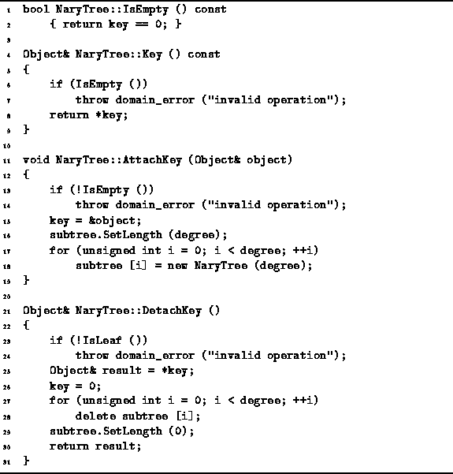

Data Structures and Algorithms
with Object-Oriented Design Patterns in C++
Data Structures and Algorithms
with Object-Oriented Design Patterns in C++
The purpose of the IsEmpty accessor function is to determine
whether a given N-ary tree is the empty tree.
The implementation of this function is given in Program  .
In this implementation,
the key pointer is zero if the tree is the empty tree.
Therefore, IsEmpty returns true if when the key
member variable is zero.
Clearly this is a constant time, O(1), operation.
.
In this implementation,
the key pointer is zero if the tree is the empty tree.
Therefore, IsEmpty returns true if when the key
member variable is zero.
Clearly this is a constant time, O(1), operation.

Program: NaryTree Class Member Function Definitions
 Copyright © 1997 by Bruno R. Preiss, P.Eng. All rights reserved.
Copyright © 1997 by Bruno R. Preiss, P.Eng. All rights reserved.